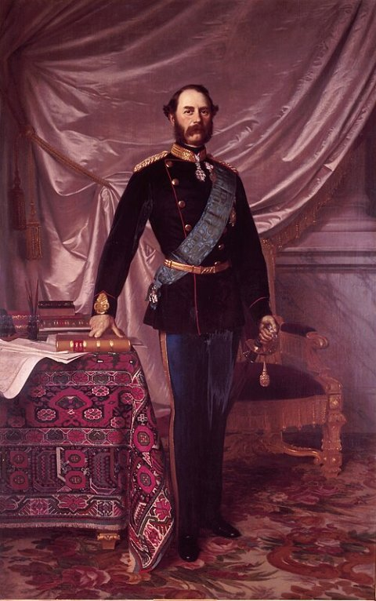
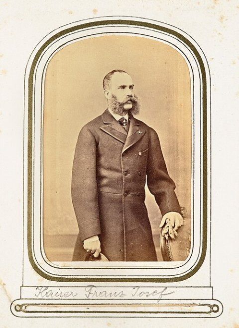
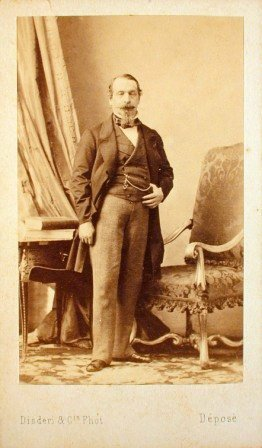
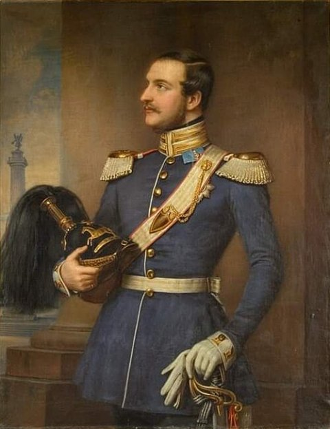

Deutsch-Dänischer Krieg
1. Februar bis 30. Oktober 1864
Geschichte › Einigungskriege 1864–1871
Drei Kriege in sieben Jahren: Preußen und Österreich gegen Dänemark 1864, Preußen gegen Österreich und dessen Verbündete 1866, die deutschen Staaten unter preußischer Führung gegen Frankreich 1870/71. Am Ende stand das Deutsche Kaiserreich ohne Österreich.
„Einigungskriege“ oder „Reichseinigungskriege“ ist eine gängige Sammelbezeichnung für die Kriege von 1864, 1866 und 1870/71. Die Bundeszentrale für politische Bildung spricht von den „drei Einigungskriegen Preußens“, die Berliner Siegessäule sollte an „die drei Einigungskriege“ erinnern.9,11
Der Begriff ist keine neutrale Beschreibung, sondern eine Deutung: Er benennt die drei Kriege von ihrem Ergebnis her, der Reichsgründung 1871, und fasst sie zu einer Abfolge zusammen. Die Kriegsgegner sehen sie anders. In Dänemark heißt der Krieg von 1864 „2. Slesvigske Krig“ (Zweiter Schleswigscher Krieg), im Englischen der Krieg von 1866 „Seven Weeks’ War“.18,12
Umstritten ist vor allem, wie planvoll Bismarck die Kriege herbeiführte. Eine ältere, lange vorherrschende Lesart sah die Reichsgründung als Werk Bismarcks; manche Darstellungen beschreiben den Feldzug von 1866 bis heute als „sorgfältig geplante Etappe“ der Einigung. Andere betonen die Einheitsbewegung „von unten“, die Rolle der übrigen Mächte und für 1870 die Provokationen von französischer Seite.10,9,12 Diese Seite verwendet „Einigungskriege“ als eingeführten Sammelbegriff, ohne damit eine Zwangsläufigkeit zu behaupten.
1. Februar bis 30. Oktober 1864
Juni bis 23. August 1866
19. Juli 1870 bis 10. Mai 1871
Ursachen sind die längerfristigen Spannungen, ohne die die Anlässe keinen Krieg ausgelöst hätten. Die Gewichtung der Ursachen ist in der Forschung eine Frage der Deutung.
Im Deutschen Bund von 1815 rangen die beiden Großmächte um die Vorherrschaft. Der Dualismus galt als wesentliches Hindernis für einen deutschen Nationalstaat.9,3,12
Strittig war, ob ein Nationalstaat Österreich einschließen sollte (großdeutsche Lösung) oder ohne Österreich unter preußischer Führung entstehen sollte (kleindeutsche Lösung). 1871 setzte sich die kleindeutsche Lösung durch.9,6,10
Die liberale Nationalbewegung forderte Einheit und Verfassung. Sie prägte nach Ziemann auch die Gestalt des neuen Staates mit.9,10
Über eine Heeresreform geriet König Wilhelm I. ab 1860 in einen Verfassungskonflikt mit dem Abgeordnetenhaus, im Kern um das Budgetrecht. 1862 berief er Otto von Bismarck zum Ministerpräsidenten.7,9
Der 1834 unter preußischer Führung gegründete Zollverein schuf einen gemeinsamen Wirtschaftsraum; Österreich gehörte nicht dazu.8,15,9
Schleswig und Holstein waren in Personalunion mit der dänischen Krone verbunden; nur Holstein gehörte zum Deutschen Bund. Die Großmächte hatten 1852 in London den Bestand des dänischen Gesamtstaats bestätigt.1,16
Nach dem Sieg über Österreich 1866 beobachtete Frankreich die wachsende Macht Preußens in Deutschland mit Sorge.5,13
Anlässe sind die konkreten Ereignisse, die unmittelbar zum Krieg führten.
Dänemark mit Schleswig, dazu die Herzogtümer Holstein und Lauenburg unter dem dänischen König; Holstein gehört zugleich zum Deutschen Bund.1,16 Am 18. November 1863 unterschreibt Christian IX. die Novemberverfassung, im Dezember besetzen Bundestruppen Holstein.1,17,31
Preußen und Österreich führen den Krieg gegen Dänemark; der Deutsche Bund ist nicht Kriegspartei. Nach dem Sturm auf Düppel am 18. April 1864 und dem Wiener Frieden vom 30. Oktober 1864 verliert Dänemark die drei Herzogtümer.2,16,31
Die Herzogtümer werden gemeinsam erobert, aber getrennt verwaltet: Schleswig preußisch, Holstein österreichisch (Gasteiner Konvention, 14. August 1865).2,16 Lauenburg ist in der Karte nicht gesondert dargestellt.
Auf Österreichs Seite stehen die vom Deutschen Bund aufgestellten Truppen, darunter Bayern, Württemberg, Hannover, Sachsen, Baden, Kurhessen, Hessen-Darmstadt, Nassau und Frankfurt; auf Preußens Seite Italien sowie Oldenburg, beide Mecklenburg, Braunschweig, die Hansestädte und weitere Kleinstaaten.3,12 Die Kleinstaaten sind in der Karte zusammengefasst; einige von ihnen, etwa Sachsen-Meiningen und Reuß ältere Linie, standen auf österreichischer Seite.3 eine Quelle
Hannovers Armee kapituliert nach Langensalza am 29. Juni, Österreich unterliegt am 3. Juli bei Königgrätz. In Italien verliert die italienische Armee am 24. Juni bei Custozza.28,29,3,14,19 Der Friede von Prag vom 23. August beendet den Krieg.3,12
Preußen annektiert Hannover, Kurhessen, Nassau, Frankfurt sowie Schleswig und Holstein. Die Staaten nördlich des Mains bilden 1867 den Norddeutschen Bund; Bayern, Württemberg, Baden und Hessen (südlich des Mains) bleiben selbständig, sind aber durch geheime Schutz- und Trutzbündnisse an Preußen gebunden. Venetien kommt an Italien.9,6,12,5
Vereinfachung: Der nördliche Teil Hessen-Darmstadts (Oberhessen) wird als Mitglied des Norddeutschen Bundes gezeigt, der südliche als süddeutscher Staat.
Die süddeutschen Staaten treten an der Seite des Norddeutschen Bundes in den Krieg ein. Nach den Grenzschlachten im August wird eine französische Armee in Metz eingeschlossen, die andere kapituliert am 2. September bei Sedan.5,13 Am 4. September wird in Paris die Republik ausgerufen; der Krieg geht bis zum Waffenstillstand im Januar 1871 weiter.25,13
Am 18. Januar 1871 wird Wilhelm I. im Spiegelsaal von Versailles zum Deutschen Kaiser proklamiert. Im Frankfurter Frieden vom 10. Mai 1871 tritt Frankreich das Elsass und Teile Lothringens ab, die als Reichsland Elsass-Lothringen zum Reich kommen.5,9,13
Grenzen vereinfacht. Grundlage: historische Grenzen von 1815 aus historical-basemaps (GPL-3.0), Belgien, Niederlande, Luxemburg sowie die Abtretungen an Frankreich 1860 (Savoyen) und an das Reich 1871 (Elsass-Lothringen) nachgebaut mit Verwaltungsgrenzen von Natural Earth. Kleinere Staaten sind zusammengefasst, Frankfurt ist als Punkt dargestellt. Maßstab ohne Gewähr für Grenzverläufe im Einzelnen.
Je beteiligtem Staat eine Person, die bis heute bekannt ist. Die Bildnisse stammen aus den 1850er bis 1870er Jahren. Für die deutschen Mittelstaaten stehen Bayern und Hannover, deren Könige 1866 auf Österreichs Seite standen.

8.4.1818 – 29.1.1906
König von Dänemark seit November 1863. Eine seiner ersten Amtshandlungen war die Unterschrift unter die Novemberverfassung, die zum Krieg von 1864 führte; danach musste Dänemark die drei Herzogtümer abtreten.23,18
Heute bekannt auch durch seine Kinder auf europäischen Thronen, darunter die spätere britische Königin Alexandra und König Georg I. von Griechenland.23 eine Quelle
Gemälde von Henrik Olrik, 1871. Bildnachweis B1

1.4.1815 – 30.7.1898
Preußischer Ministerpräsident seit 1862, Kanzler des Norddeutschen Bundes 1867, erster Reichskanzler 1871. Er veröffentlichte 1870 die „Emser Depesche“ in verschärfter Form.26,34,7,4,13
Heute bekannt als „Reichsgründer“, ein Bild, das die Forschung inzwischen differenziert, und durch die Sozialversicherungsgesetze der 1880er Jahre.26,10
Fotografie, unbekannter Fotograf, vor 1870. Bildnachweis B2

18.8.1830 – 21.11.1916
Kaiser von Österreich seit 1848. 1864 an der Seite Preußens, 1866 dessen Gegner: Nach Königgrätz scheidet Österreich aus dem Deutschen Bund aus. 1867 folgt der Ausgleich mit Ungarn.27,35,3,14
Heute bekannt durch seine 68-jährige Regierungszeit, die bis in den Ersten Weltkrieg reichte.27 eine Quelle
Fotografie von Augustin Aimé Joseph Le Jeune, 1860er Jahre. Bildnachweis B3

4.7.1807 – 2.6.1882
Freiheitskämpfer des Risorgimento. 1866 führte er italienische Freiwillige ins Trentino gegen Österreich, 1870/71 kämpfte er auf französischer Seite und verteidigte Dijon im Januar 1871.20,21
Heute bekannt als einer der wichtigsten Gestalter der italienischen Einigung.22,20
Fotografie der Fratelli Alinari, um 1867. Bildnachweis B4

20.4.1808 – 9.1.1873
Kaiser der Franzosen 1852–1870. 1866 blieb Frankreich neutral; 1870 geriet er bei Sedan in Gefangenschaft und wurde am 4. September 1870 abgesetzt.24,25,13
Heute bekannt unter anderem durch den Umbau von Paris unter Präfekt Haussmann.25 eine Quelle
Fotografie von Eugène Disdéri, 1859. Bildnachweis B5

25.8.1845 – 13.6.1886
König von Bayern seit März 1864.36,30 1866 trat Bayern auf Österreichs Seite in den Krieg ein, 1870 auf Grundlage des Bündnisses von 1866 an der Seite Preußens. Am 30. November 1870 unterschrieb er den „Kaiserbrief“, der Wilhelm I. die Kaiserwürde antrug.30 eine Quelle
Heute bekannt durch seine Schlösser, vor allem Neuschwanstein, Herrenchiemsee und Linderhof.30 eine Quelle
Fotografie von Joseph Albert, um 1864. Bildnachweis B6

27.5.1819 – 12.6.1878
Letzter König von Hannover (1851–1866). Seine Armee kapitulierte am 29. Juni 1866 nach der Schlacht bei Langensalza; im September 1866 annektierte Preußen das Königreich.28,29
Er war blind und förderte als Musikliebhaber Komponisten wie Brahms und Schumann.29 eine Quelle
Gemälde von Joseph Karl Stieler, 1850er Jahre. Bildnachweis B7
Abgerufen am 15.11.2026. Ziel sind zwei voneinander unabhängige Quellen je Aussage; Seiten derselben Institution (etwa mehrere LeMO-Seiten des Deutschen Historischen Museums) gelten dabei als eine Quelle. Aussagen mit nur einer Quelle sind mit eine Quelle markiert. Wikipedia dient nur dem Datenabgleich.
Alle Porträts aus Wikimedia Commons, verkleinert. Lizenz und Herkunft stammen aus den Angaben der Commons-Dateiseiten und wurden nicht unabhängig geprüft.

._Homme_d'Etat_prussien,_il_est_ministre-pr%C3%A9sident_de_la_Prusse_du_1862_%C3%A0,_PH4142-21.jpg){kind=link}

.jpg){kind=link}

_(Zeno_Fotografie).jpg){kind=link}